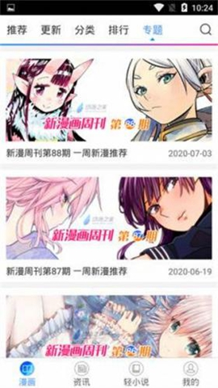

NyaHentai 里藏着的四个冷门玩法——从评论探测器到专题淘货
大多数人用 NyaHentai 只停留在"搜作品 → 点开看"，其实它藏着专题页淘货、评论区当探测器、版本判断信号、下载核对四件事，没人教但真有用。
你以为 NyaHentai 就是个搜漫看漫的工具？它的NyaHentai官网上没写这些，打开应用、搜关键词、点开作品、看完走人——这是九成用户的日常路径。但我把它翻了个底朝天之后发现，它藏着好几个大多数人没发现的小玩法，都是那种"用了半天才知道原来可以这样"的冷东西。而且这些功能都不需要登录、不需要折腾设置，只是入口藏得有点深，官方也没专门做引导。
今天就把我挖到的四个分享出来。
专题页——最被低估的"淘货"入口
NyaHentai 底部有五个标签，首页、分类、排行、更新、专题。前四个大家天天用，专题页是最容易被划过去的那个。我之前也是，觉得"专题不就是编辑挑几个作品凑一页吗"，直到有天无聊点进去翻了半小时旧刊——这地方居然是发现冷门作品的最佳路径。
专题页的形态是周刊式的按期聚合，每期有编号、有发布日期、有主题封面。最新一期是当前编辑方向，顺着日期往回翻能淘到几个月甚至更早的主题合集。你想找"智斗向完结漫""和风奇幻短篇"这种具体口味，直接搜关键词可能漏东西，但翻专题，一期就是一组同主题作品，比一篇篇搜效率高太多。

这里的关键不是看最新一期，而是往回翻旧刊。旧期不会消失，顺着日期往前刨，能挖到不少当时没注意到的好东西。我上个月翻到八十几期的"异世界短篇合集"，一口气追了三部完结小短篇，全是搜关键词搜不到的冷家伙。
唯一要注意：专题里看到好作品，记得第一时间收藏进书架。专题列表本身不替你记看过的篇目，翻完一期退出，再回来找就费劲了。
评论区——作品质量探测器
这个发现说出来可能有点傻，但真不是所有人都这么用：进一部作品之前，先扫一眼评论区的热评。
样本里提到过一个有意思的观察——"作品详情页的评论区就是质量探测器"。这话一点不假。一部作品如果评论区热评全是剧情讨论、伏笔拆解、结局分析，没有灌水的"好看""推荐"，那这部作品大概率值得看。反过来，如果热评区全是表情党，或者前排热评在吵画风，那多半不是我的菜，直接跳过省时省心。
这个技巧特别适合在"今天想找点新东西但不知道看什么"的状态下用。排行榜前几名不一定合你口味，但评论区热评的质量是骗不了人的——有人认真拆解剧情的作品，至少在"值得花时间"这件事上有保障。
而且评论区不只是围观。有想法就接话、没看懂就提问、不同意观点就对着观点说——这些回帖基本都有人响应，社区里热心人真不少。我之前看一部悬疑向作品，结尾没太想明白，在评论区提了一句，半小时内就有人回了解析，补了我好几个没注意到的伏笔。
版本更新的四信号——别瞎更也别硬扛
NyaHentai 以 APK 形态分发，没有应用商店的自动更新，换不换新安装包全靠自己判断。我之前踩过两个坑：一是看到有"新版"就更，结果装了套壳应用；二是功能出问题了硬扛了一周才意识到是版本过旧。
现在我按四个信号判断要不要更：
- 功能持续异常——清后台、换网络、重装当前版本都解决不了，那可能是旧版本和线上环境不匹配了
- 资源加载持续异常——新作品长期搜不到、新章节看不到，而别人那边正常，先排除网络问题再怀疑版本
- 社区在讨论新版本——这是最直接的风向标，大家都说"新版本修复了 XX"，那大概率值得更
- 安装包来源更新了——可信渠道的版本信息在推进，可以考虑跟进
反过来，用得好好的、没有以上任何信号，就不要为了更新而更新。我去年有次手贱更了个"新版"，结果是套壳应用，数据差点丢，折腾了一下午才救回来。版本核对的底线只有一条：认准包名 com.NyaHentai，体积约 10MB，差异过大的就要警惕。更多参数核对的细节，去NyaHentai文档能查到完整说明。
更新的正确姿势也简单：直接覆盖安装就行，安卓支持同包名覆盖升级，通常不需要卸载旧版，阅读进度和收藏都能保留。真出问题才考虑卸载重装——但注意卸载会清空本地数据，这步之前最好先备份一下书架。
下载前的三件事核对
最后一件事是下载安装包的时候要做的核对。听起来很基础，但我问过三个朋友，他们都跳过了。
第一，来源可靠性。NyaHentai 不在常规应用商店上架，安装包要从网盘分享链接或官方下载拿，从来路不明的链接下载是作死。
第二，文件体积。正常安装包约 10MB，体积差异过大的就要提高警惕——套壳应用、植入广告的二次打包包，体积往往比原版大得多。
第三，版本信息。下载页标注的版本号要留意，不要看到"最新版"三个字就无脑下，先确认一下是不是可信渠道标注的那个版本。
这三件事加起来不到一分钟，但能避开 90% 的套壳和假包问题。我之前帮朋友排查过一次"应用老是弹广告"，结果就是他从某个弹窗广告里下了个二次打包的"新版"，装的时候也没核对包名，白折腾了半小时卸载重装。
一个要避的坑
说了四个好用的，最后说一个我踩过的坑——专题里发现的好作品不要直接"看完就走"。专题列表的本质是编辑按主题聚合的"展示层"，你在专题里点开某部作品看完了，它不会自动帮你标记"我看过"，也不会自动加进你的书架。
我有次在一个"完结短篇合集"专题里一口气看了五部，退出应用之后想起来"那部画风超棒的叫什么来着"，回去翻专题才发现，那个专题已经被新的一期顶下去了，我翻了三分钟才找回去。从那之后我养成了一个习惯：专题里点开任何一部，看完先点收藏再退——一秒钟的事，省得之后找得头疼。
把它用透
这四个玩法说出来都不复杂，没有什么"隐藏菜单""开发者模式"那种东西——就是专题页往回翻、评论区先扫一眼、更新看信号、下载核三件事。但 NyaHentai 这类应用的乐趣恰恰就在这里：它不给你塞功能，入口摆在那里，你愿不愿意多逛两步、多看两眼，就是普通用户和折腾党的区别。
现在我每天打开应用的流程是：先扫一眼更新标签有没有新章节 → 无聊了翻两期专题看看有没有合口味的 → 看到新作品先去评论区瞄一眼热评质量 → 每隔一两周去可信渠道对一下版本号。这套流程比纯靠排行榜和搜索高效多了，也发现了不少搜关键词搜不到的好东西。
如果你也用 NyaHentai，今天就试试往回翻几期专题吧——说不定能淘到惊喜。另外提一句，这套资料在GitHub、Gitee、GitCode三个仓库都有同步备份，喜欢折腾源码或想查更细信息的可以去翻一翻。